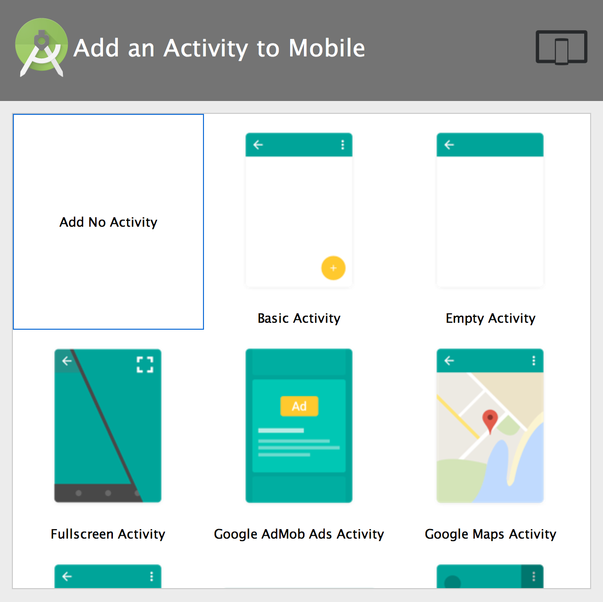
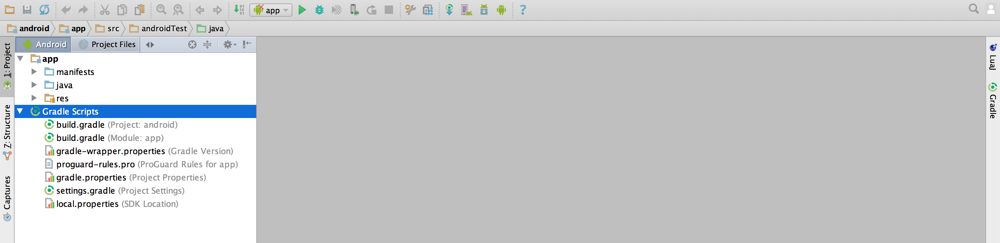
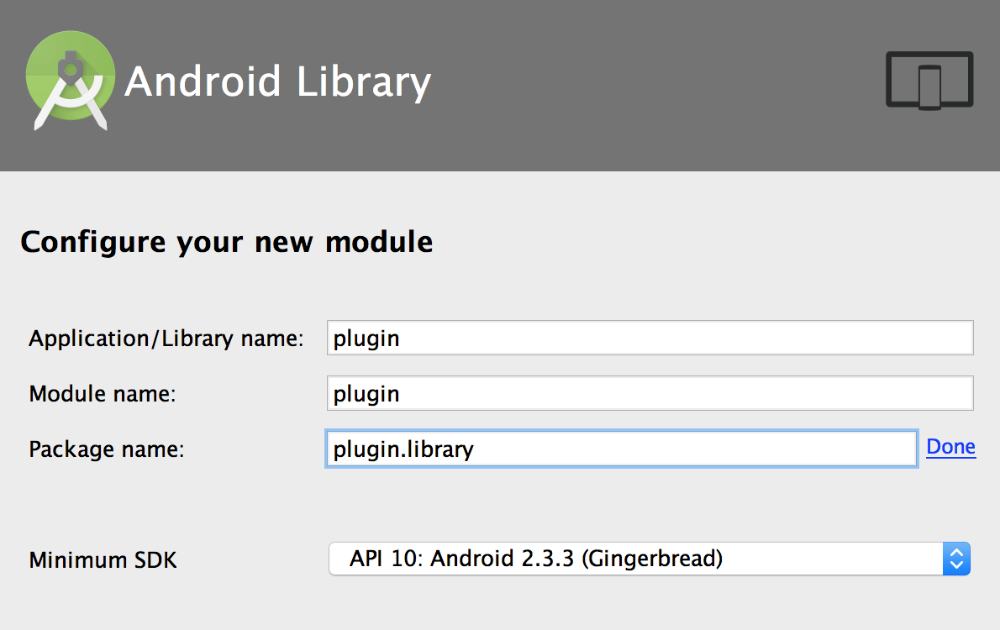

Android Studio Integration
Setup/Preparation
This guide assumes that you have already set up a development environment for CORONA_ENTERPRISE_PRODUCT. If not, please see the [CORONA_ENTERPRISE_PRODUCT — Android Setup][native.android.androidSetup] and return to this guide once you’ve finished installing the Android Tools.
Before starting, download and install Android Studio. Run Android Studio for the first time and set it up (select a theme, update the Android SDK as desired, etc.).
If you haven’t already, copy the
CoronaEnterprise/ProjectTemplates/App/project directory to the desired location on your machine.Open the
[PATH_TO_PROJECT_TEMPLATE]/App/project directory in Finder and rename theandroiddirectory toandroid_old. This is so the old Ant version stays out of the way.From with Android Studio, select
Start a new Android Studio project .Specify an Application name that describes your project. If you already have an Android package name
(and a keystore) , make sure to specify the correct values. Also make sure that Project location is exactly[PATH_TO_PROJECT_TEMPLATE]/App/android/—

When finished, click Next.
On the next screen, in the Phone and Tablet section, choose a Minimum SDK version of
API 15: Android 4.0.3 (IceCreamSandwich)

When ready, click Next.
On the next screen, select Add No Activity and then click Finish. Android Studio will then create your project.

- Now that the new
androiddirectory is created, open the Terminal application andcdto the[PATH_TO_PROJECT_TEMPLATE]/App/android/CoronaEnterprisedirectory:
cd [PATH_TO_PROJECT_TEMPLATE]/App/android/ ln -s /Applications/CoronaEnterprise CoronaEnterprise
- Verify that your symbolic link works by
cd-ing

Project Configuration
- Return to Android Studio and open the
Projectsidebar on the left. Expand theappandGradle Scripts

- Delete everything in the
app→java

- You’ll need to add a
sub-project for the plugin. SelectFile → New → New Module and choose Android Library, then click Next to continue.

- On the next screen, Application/Library name and Module name must be exactly
plugin. Package name should be in format of how a user would add the plugin to theirbuild.settings, for exampleplugin.flashlight. For this project, enter simplyplugin.libraryand click Finish. You can ignore the warning about the casing of the application name.

- In the Project sidebar, locate the
plugin→javaplugin.library(androidTest)plugin.library(test)

Now you need to create a
LuaLoader.javafile for the plugin. From within Finder, copy the file from[PATH_TO_PROJECT_TEMPLATE]/App/android_old/src/plugin/libraryand paste it into this directory:[PATH_TO_PROJECT_TEMPLATE]/App/android/plugin/src/main/java/plugin/library

- While still in Finder, delete the
androidTestandtestdirectories from bothapp/src/andplugin/src/since you don’t need them.